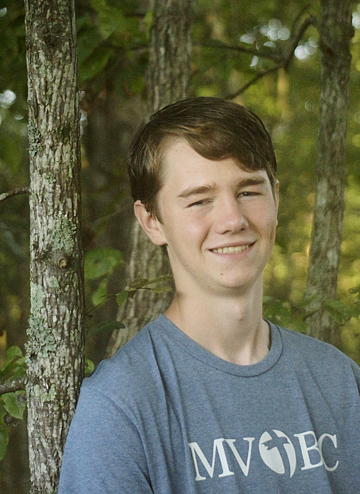
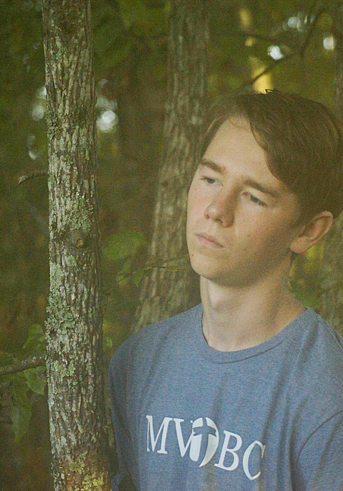

I'm Eli! The dude behind the camera.
This is one of my many hobbies I frequently revisit or get interested in again. A bit more about the rest of my hobbies: I love kayaking, biking, hiking, camping, mountaineering, cooking (not baking 😭), cross country (running), caving, drumming (on or off a set), and so much more. Even though I like to regularly find new hobbies, I've regularly engaged in some sort of religious volunteering before and after I got my driver's license. Beforehand, it looked more like helping out at church where I could, and helping build a food pantry. Once I got my license though, I expanded to helping at a downtown homeless ministry ran by a dear friend at Rock Bridge Church, the Chattanooga Rescue Mission, and the Riverwalk Outreach Mission. I've found that, in contradiction to most of my hobbies, the deeper and more complicated serving the homeless of Chattanooga gets, the more I love it. This passion has even branched into my home life, where I've ventured into leading some Bible studies.
If you take away one thing from this, know that I am ultimately, completely satisfied in something otherwordly.

If you'd like to learn more about me, shoot me a quick inquiry through the contact form. I'm always looking for new ways to serve, people to run/hike/bike with, and more! If you do decide to reach out, make sure to specify in the title so that I can reply as soon as possible. Other than that, just make sure you're specific to reduce the back and forth. Here's the link to the contact page. Hope you have a great day!